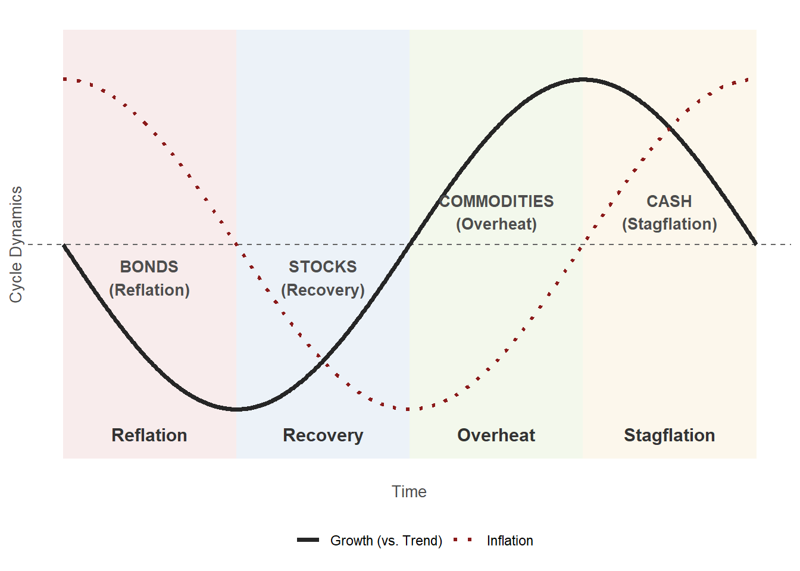

5 From the Economic outlook to views
Once the strategic allocation is fixed, the next step is to read the Economic outlook and turn it into views. The outlook is forward-looking information about the coming period; the views are what you enter into the app to tilt the tactical allocation away from the strategic one and outperform your benchmark.
5.1 What the outlook gives you
The Economic outlook page shows the analyst’s estimate of the coming period, with an expected range around each number.
It provides a narrative report on the economy and the markets, along with estimates for:
- Interest rates by maturity and currency
- Economic indicators
- The expected excess market return and the factor premia (HML, MOM, RMW) per currency
- Credit spreads
- Exchange rates
The algorithm behind the game uses these estimates to build a set of expected excess returns for the 16 benchmark positions. You can edit each estimate: click it and enter a new value.
None of this changes the strategic allocation. It changes what you expect relative to the benchmark for the next round, and that is a view.
5.2 Reading the outlook: the business cycle
The outlook gives you numbers. Your job is not to copy them into the app; it is to decide whether you believe them, and where you disagree. The Investment Clock is the lens that turns the outlook’s economic indicators into a view about which asset classes are likely to lead and lag over the coming quarters.
5.2.1 The cycle in one paragraph
Economic variables do not move independently. Growth, inflation, employment and confidence evolve together through a recurring pattern of expansion and contraction. The pattern is not a law, but it is a useful empirical regularity. The framework classifies the economy by two things: the direction of growth relative to trend (rising or falling) and the direction of inflation (rising or falling). Those two directions define four phases. Each phase has historically favoured a different asset class, and the outlook’s numbers are what tell you which phase the economy is in.
The framework is the Investment Clock of Greetham and Hartnett (2004). The four phases and the asset-class rotation they imply are summarised in the figure below.
5.2.2 The four phases
| Phase | Growth | Inflation | Best asset class | Why |
|---|---|---|---|---|
| Reflation | Falling | Falling | Bonds | Central banks cut rates aggressively; bond yields fall and prices rise. |
| Recovery | Rising | Falling | Stocks | Growth turns up while rates stay low; profits recover fastest. |
| Overheat | Rising | Rising | Commodities | Capacity is used up and inflation rises; real assets benefit. |
| Stagflation | Falling | Rising | Cash | Growth slows but inflation stays high; the central bank cannot cut. |
The table is a stylised summary. The point is not that the pattern repeats exactly, but that the direction of growth and inflation tells you something about which asset class the environment is likely to favour.
The pattern is not just theory. The historical record from the United States, covering April 1973 through July 2004, shows the same rotation in realised returns.
| Phase | Bonds | Stocks | Commodities | Cash |
|---|---|---|---|---|
| Reflation | 9.8 | 6.4 | −11.9 | 3.3 |
| Recovery | 7.0 | 19.9 | −7.9 | 2.1 |
| Overheat | 0.2 | 6.0 | 19.7 | 1.2 |
| Stagflation | −1.9 | −11.7 | 28.6 | −0.3 |
| Full sample | 3.5 | 6.1 | 5.8 | 1.5 |
The magnitudes are large: the difference between holding stocks in Recovery and holding them in Stagflation is over thirty percentage points of annual real return. The numbers come with caveats: they are drawn from one country and one period, and the commodity figures are heavily influenced by the oil shocks of the 1970s, so the direction of the pattern is more informative than the specific figures. What the table shows is that asset-class leadership rotates with the cycle. It does not promise that the same magnitudes will repeat.
5.2.3 Reading a classification off the outlook
The outlook reports, for each economy, the GDP path, the inflation path, the unemployment rate and confidence indices. The classification combines the direction of growth with the direction of inflation.
The example below uses constructed numbers, not figures from the game; the numbers you see in a round will differ, but the exercise is the same.
Suppose the outlook reports the following for two economies, A and B.
| Indicator | Economy A | Economy B |
|---|---|---|
| GDP growth, last four quarters | rising steadily | rising, but slowing over the last two quarters |
| Inflation, current vs four quarters ago | 0.6 % → 1.9 % | 1.4 % → 1.4 % |
| Unemployment, current vs four quarters ago | 5.4 % → 4.6 % | 5.0 % → 4.9 % |
| Consumer confidence | rising sharply | flat |
| Business confidence | above its long-run average | falling sharply |
Economy A is in Overheat. GDP is rising steadily, unemployment is falling, and both consumer and business confidence are at levels consistent with an economy running above trend. Inflation has moved up sharply. Rising growth and rising inflation together place A in Overheat.
Economy B is in Recovery. GDP growth is positive but decelerating, inflation is flat and low, and business confidence has fallen sharply. Growth is still rising relative to trend but the momentum is fading. B is in the later part of Recovery, and the fading momentum is a warning: if growth falls back below trend, the clock turns back toward Reflation.
The classification gives you a direction for each segment in the client’s universe:
| Segment | Economy | Phase | Directional view |
|---|---|---|---|
| Equities A | A | Overheat | Overweight |
| Equities B | B | Recovery | Overweight |
| Government bonds A | A | Overheat | Underweight |
| Government bonds B | B | Recovery | Underweight |
This table is the direction step. It is not yet a set of Black–Litterman views. To turn it into views, each row is compared to the prior in station 3, the gap is sized, and the confidence is set from the strength of the cross-checks (below).
5.2.4 Cross-checks
The classification is a hypothesis, not a conclusion. The outlook supplies two further sources of evidence that can confirm or contradict it.
Sector data. The four phases favour different equity sectors. Cyclical and value sectors (industrials, basic materials) lead in Overheat and Recovery; defensive growth sectors (consumer staples) lead in Reflation; defensive value sectors (oil and gas, pharmaceuticals, utilities) lead in Stagflation. If the sector table shows cyclical and value sectors leading over the recent windows, that is consistent with an Overheat or Recovery classification. If it shows defensive growth leading, that is inconsistent, and you should lower your confidence in the classification or reconsider it.
Factor data. The outlook supplies value (HML), momentum (MOM) and robustness (RMW) premia per currency. Falling inflation favours growth stocks; rising inflation favours value stocks. Momentum is not tied to the level of growth or inflation but to the persistence of the market’s direction: a clear phase transition favours momentum, a stalled or backward clock does not. If the factor data shows momentum leading, that is consistent with a market moving through a phase transition. If value is weakening while the classification says inflation is rising, that is a counter-signal.
The rule is simple: two or more confirming signals support the classification; a confirming signal and a contradicting one lower your confidence; a classification contradicted by both the sector and factor data should be revisited before you enter a view. The confidence you set in the Black–Litterman step (below) should reflect how many signals agree.
5.2.5 What the classification gives you
A direction for each segment, and a confidence based on the cross-checks. That is the input to the Black–Litterman step. The classification does not tell you how much to tilt; the Black–Litterman model does that, weighted by your confidence and by the size of the gap between the outlook and the prior.
5.3 A view, in the form the app needs
Station 3 of the app takes views in the Black–Litterman form; station 4 turns them into tilts away from the strategic allocation. Each view is either:
- Absolute: “position A earns x percent a year over cash”. Example: US equities earn 12 %.
- Relative: “position A beats position B by x points a year”. Example: euro-area equities beat Swiss equities by 2 points.
Each view has a confidence between 5 and 95 percent. The prior the views are measured against is not the sample mean but the equilibrium implied by the fixed SAA: the expected returns under which the client’s strategic allocation is exactly optimal (Π = γΣw). With no views the posterior equals the prior, and the tactical allocation (Chapter 6) equals the strategic one. A view that agrees with the prior leaves it there too. Every deviation you see later can be traced to a view you entered.
5.4 Turning the outlook into views
A practical recipe, per round:
- Start from the prior table in station 3 (column “Prior, implied by the SAA”). For the Hartleys’ SAA the implied excess return of US equities is 7.5 %, of UK equities 9.5 %, of US government bonds 0.4 %.
- Compare with the outlook. Build the outlook’s expected excess return for a segment the way the game does: for equities, the expected excess market return plus the factor premia you expect the segment to earn (the analyst’s figures, or your own); for government bonds, the change in yields you expect (a rise in yields is a negative return for a constant-maturity bond: roughly minus duration times the yield change) plus the running yield; for corporate bonds the same plus the spread.
- State the difference as a view, in annual terms. If the outlook says US equities should do better than the prior implies, enter an absolute view above 7.5 %. If it says only that one market beats another, enter a relative view; relative views are safer, because they do not require you to translate a quarterly estimate into an annual level.
- Set the confidence from the expected range. An estimate at the centre of a narrow range: 70 to 80 %. An estimate at the edge of its range, or a narrative you half believe: 30 to 50 %. The default 50 % is the textbook He–Litterman setting.
- Keep τ at 0.05 unless you want every view to move the allocation more (higher τ) or less (lower τ).
- Read the posterior table: which positions moved, by how much, and whether the sign is the one you meant. The “Change” column is your view after the model has weighed it against the prior.
TipOne set of views for all funds
Views are about the market, not about the client. Enter the same views for every fund; the tilt they produce differs by client (Chapter 6), because each fund has its own prior and its own γ. The app keeps the views and lets you switch the fixed SAA it is applied to.
5.5 Worked example
Outlook: the analyst’s expected excess market return for USD is at the top of its range, the US narrative is strong, and the factor premia are positive. We hold the view that US equities earn 12 % over cash next year, confidence 50 %, τ = 0.05.
Station 3, the Hartleys: the prior for US equities is 7.5 %, the posterior 9.8 %. The view moves the posterior part of the way toward 12 %, and it lifts the positions correlated with US equities as well (UK equities from 9.5 to 11.2 %, euro-area equities from 9.7 to 11.6 %) while leaving US government bonds almost unchanged (0.39 to 0.30 %). For the Keller trust, the second invented client (γ = 5, home euro area, no commodities), the same view moves US equities from 7.7 to 9.8 %: a different prior, because a different SAA, and a different γ.
5.6 What not to do
- Do not enter the sample mean as a view. It is already in the SAA.
- Do not enter a view on a position the SAA does not hold unless you mean to open it. An absolute view on a foreign position is also a view on its currency: a view on euro-area government bonds opens a euro position against the dollar (Chapter 6).
- Do not enter five views at 95 % confidence in round 1. The tactical allocation is scaled by confidence; a wall of certain views produces a wall of tilts and a tracking error the client did not sign up for.
5.7 Deliverable of this step
The views for the round, written down with their confidence and the sentence from the outlook that justifies each, in the team forum. They are what you will judge in Chapter 9.
Greetham, Trevor, and Michael Hartnett. 2004. The Investment Clock. Special Report No. 1. Merrill Lynch.